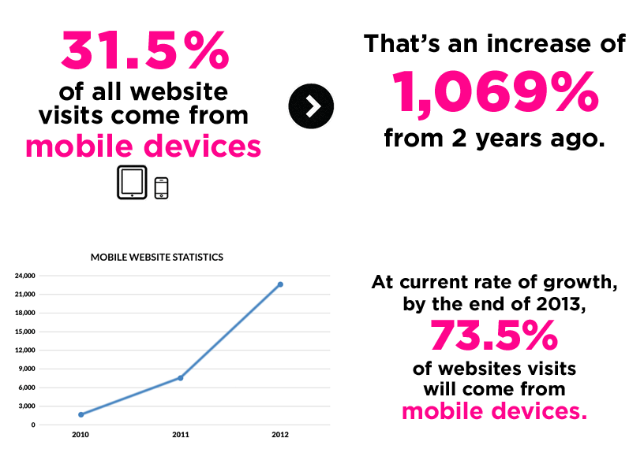

Moving Forward
With A Mobile Web
By The Memphis Agency / @memphisagency
About Me
Danni Francis / @dannifrancis
Nail your strategy
in the next 30 minutes
Don't be scared of the gap
Top 5 things for your strategy:
- Gather and track data
- Master your content
- Optimise your social channels
- Allocate budget to mobile ads
- Device friendly website with responsive design
- Gather and track data
- Master your content
- Optimise your social channels
- Allocate budget to mobile ads
- Device friendly website with responsive design
Stalk the following things
(just the way you stalk your ex on Facebook)
(we’ve all done it)
Gather and track data
- Stalk your own site browsers via Google Analytics
- Stalk all category buyers with professional market research
- Stay abreast of industry or worldwide trends. GOOD PLACE TO START: Google Consumer Barometer, HowToGoMo.
- Stalk your competitors
What to look for
- Content Offering
- User Experience (content, navigation, formatting, media)
What to look through
Smart phones
iPhones, Samsung Galaxy, HTC, Blackberry, Xperia
Tablets
iPad, Galaxy Tablet, Surface, Nexus 7, Kindle Fire
Desktop
Apple, Microsoft, Linux
Generate yourself something like this:
- Gather and track data
- Master your content
- Optimise your social channels
- Allocate budget to mobile ads
- Device friendly website with responsive design
Mobile is the best thing that has ever happened to your content.
Sexy content (that works)
 Keep it Quick
Keep it Quick Simplify Navigation
Simplify Navigation- Design For Visibility
 Make it Accesible
Make it Accesible Make it Easy to Convert
Make it Easy to Convert- Make it Seemless
Don't forget
- Content = Resources
- Myth - people want to see less on mobile
- Shift your thinking
- Don’t duplicate content across platforms
- Gather and track data
- Master your content
- Optimise your social channels
- Allocate budget to mobile ads
- Device friendly website with responsive design
Pimp your social
Factual information
Engaging, fresh content
Particularly location-based
- Google + Local (previously Google Places)
- FourSquare
- Facebook Pages
- Review sites - Trip Advisor, Urban Spoon, Yelp
How to use them in a campaign
- Gather and track data
- Master your content
- Optimise your social channels
- Allocate budget to mobile ads
- Device friendly website with responsive design
Ads on mobile
- Maximize reach
- Are dynamic
- Should be on a browser, not an app.

Examples
- Facebook mobile ads
- ADWords across devices
- In-app advertising
- Mobile ad networks
- Optus Digital Media, News Limited, Fairfax, BigMobile
- Gather and track data
- Master your content
- Optimise your social channels
- Allocate budget to mobile ads
- Device friendly website with responsive design
Go Responsive
(impress the pants off a nerd with this concept)
Recap of the 5 things I just told you to consider:
That’s your cue to take note of these.
- Research your data (channel your inner stalker)
- Master your content (make it sexy)
- Optimise your social channels (pimp them)
- Allocate budget to mobile ads (ch-ching)
- Device friendly website with responsive design (oh wow, it works on my iPhone without me having to pinch and close one eye like a pirate)